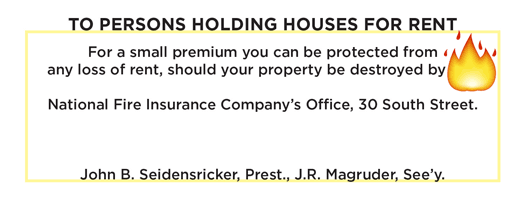

Telegrams
The following telegrams were received at the office of The Daily Exchange from Washington’s reporter of The Associated Press:

Boston
Murder on Shipboard
Dec. 29 — Wm. Transue, of Williamsburg, N. Y., was killed by Mark Dority, of Concord, N.H., in a quarrel on board the whale ship California, of New Bedford, Nov. 1. Both were seamen. Dority was placed in the hands of the American Consul at Bahia.
An American Vessel Boarded by the British Steamer Ajax
Dec. 29 — The brig Anglo-Saxon arrived at this port yesterday morning, from Port Praya. She reports that on the 27th of October last she was ordered to heave to, and after having done so was boarded by an officer from Her Majesty’s war steamer Ajax. After inquiring the name of the vessel, where from and whither bound, her papers were demanded and shown. The British official then proceeded to examine the papers at his leisure and the Anglo-Saxon was detained one hour and a half, awaiting the action of the British functionary. The papers were then handed to the captain of the Anglo-Saxon and she proceeded on her voyage. The collector of this Port will procure the necessary affidavits in connection with this outrage, and forward them to the proper department at Washington without delay.
Sailing of the Arabia
Dec. 29 — The Cunard steamship Arabia sailed at noon, with fifty-eight passengers for Liverpool and twenty-one for Halifax, and about seventy-seven thousand dollars in specie.
Sailing of the Arabia
Dec. 29 — The steamer Arabia sailed hence to-day for Liverpool at noon, with $77,000 in specie.
The Will of the Late August Thorndike
Dec. 28 — It is stated that the will of the late Augustus Thorndike will be contested by his son-in-law, Lieutenant Marin, whose wife was cut off from sharing the property equally with the other heirs. Rufus Choate and other eminent counsel are said to be retained.

. . . . .
Charleston
From Havana and Key West
Dec. 28 — The steamship Isabel, from Havana on the 25th instant, via Key West, has arrived at this port. General Scott was at Key West. He intended to leave for New Orleans in the steamer Galveston, on the 26th, touching at Mobile. At Havana, the holiday season produced quietness in the market. Sugars were unchanged. The new crop of clayed molasses was quoted at 4@5 ½ reals. Exchanges — On London, 13 ¼ percent. premium; on New York, unchanged. Freights were dull.
. . . . .
Halifax
Non-Arrival of the America
Dec. 29 — The Cunard steamship America, which sailed from Liverpool on the 18th inst., in view of the weather reported by recent arrivals, is hardly considered due at this port before Friday.
Fire and Loss of Life
Dec. 29 — Five large buildings in the same block with the telegraph office were burnt last night, and two persons named Grant and Hagan perished.
. . . . .
New Orleans
Sailing of another Filibuster Expedition from New Orleans
Dec. 28 — A suspicious looking schooner, supposed to have a party of filibusters on board, went to sea yesterday. The revenue cutter pursued her and fired a blank, and subsequently a shot gun, but the schooner kept in shoal water and escaped. It is reported that Collector Hatch is collecting a large force, and has chartered a steamer with the intention of preventing filibustering expeditions to Nicaragua.
. . . . .
New York
Rumored Revolution in Nicaragua, Complicity with Gen. Walker
Dec. 30 — The Herald’s special corespondent at Panama learns, through a private source of high character, in the northern part of Nicaragua, that a scheme to carry out a revolution in that Republic, and place the Democrats of Leon in favor again, is on foot. A plan is laid in conjunction with Gen. Walker’s movements in the United States and the Government of Honduras. The filibusters at Mobile are expected to land at Truxillo or Omoa and cross from Honduras to Leon. President Santas Guardeota has promised to assist them with five hundred natives in driving Martinez from Nicaragua. He made it a condition, however, that Gen. Walker should not accompany the expedition. From Omoa or Truxillo the meditated march is practicable, as the distance is not very great.
The Storm
Dec. 30 — The storm has prevented any arrivals from sea to-day except the steamers Potomac from Baltimore, and the Pacific from Galway. No disasters are reported so far. The storm was very severe this morning here and through the northern part of the State and Canada, through the State of Vermont and far eastward.
Tare on Coffee
Dec. 29 — The committee of Importers have deferred to representations of Grocers and met their views by allowing 1 per cent. tare from first proximo, provided Baltimore and Philadelphia Importers coincide.
From Nicaragua
Dec. 29 — The latest advices from Nicaragua report that Yrisarri has been recalled — Two more British ships of war had arrived at Greytown. The Nicaraguan government was in fear that five hundred filibusters were coming down in the steamer Hermann.
Arrival of the Empire City from Havana
Dec. 27 — The steamer Empire City, from Havana, with dates to the 23rd, arrived here last night, with Senator Douglas and his wife among the passengers. The steamer came up unannounced, so that nobody was present to receive Mr. Douglas except the Committee of the Common Council, who extended the hospitalities of the city to him, when he proceeded to his hotel. Mr. Douglas remains three or four days.
. . . . .
Philadelphia
The Snow Storm
Dec. 29 — It has been snowing furiously here since 10 o’clock this morning. It is now three inches deep, and the sleighs are running briskly.
Hon J. Glancy Jones
Dec. 29 — Hon. J. Glancy Jones, our new Minister to Austria, dined with a number of friends this afternoon in this city. He sails in the Havre steamer of the 8th.
. . . . .
South Carolina
Columbia, S.C.
Dec. 30 — A fire occurred here yesterday, which burnt 70 bales of cotton and several mules and horses. The property belonged to the estate of Richard Sandley.
. . . . .
St. Louis
Fires
Dec. 30 — A disastrous fire occurred at Booneville, in this State, this morning, destroying a block of brick buildings, including The Observer office. Loss from fifty to sixty thousand dollars — insurance only $30,000. The tire was the work of an incendiary.
Sickness at the Kansas and Nebraska Gold Diggings: St. Louis
Dec. 30. — Later and authentic accounts confirm the previous report of the sickness prevailing at the Kansas and Nebraska gold diggings.
Peace Concluded with the Navajo Indians
Dec. 30 — A letter from Fort Defiance states that peace was concluded with the Navajo Indians on the 20th of November.
Congressional Contest
Dec. 30 — James C. Conkling is announced as an opposition candidate for Congress, in Mr. Harries’ district, Illinois.
Meeting of the Missouri Legislature
Dec. 29 — The Missouri Legislature organized yesterday, Mr. Coffee, Dem., being elected speaker. The Governor’s message was received and read. The receipts into the State Treasury for the past two years have been $1,361,000, and the expenditures for the same period, $1,132,000. The Governor hopes that additional aid will be granted for the completion of the Pacific Railroad to Kansas City. He advises that instead of selling the roads to make them pay the interest on the State bonds, that measures be taken to secure the faithful application of the receipts of the companies to legitimate purposes, allowing the roads to be worked until their ability to pay is fairly tested. The number of public shares in the State have been increased in the last three years from 1,500 to 3,380. The Governor urges the establishment of an agricultural college. He says he has received communications from the Legislatures of Maine, Massachusetts and New Hampshire, on the subject of slavery, of a very illiberal character. He has not acknowledged their receipt, and will not submit them to the Legislature unless they are specially called for.